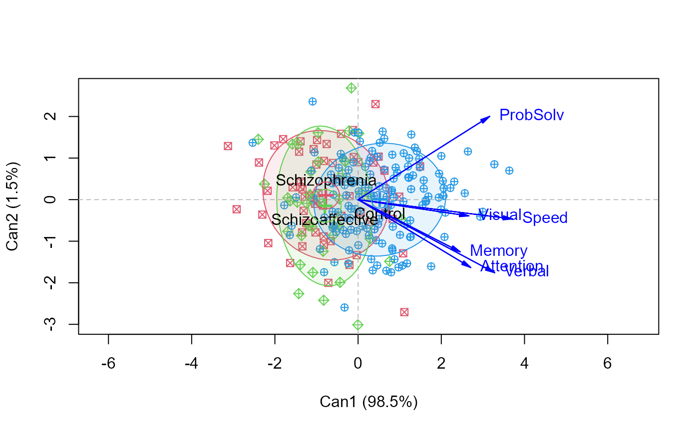

<!-- Generated by pkgdown: do not edit by hand -->
<!DOCTYPE html>
<html>
  <head>
  <meta charset="utf-8">
<meta http-equiv="X-UA-Compatible" content="IE=edge">
<meta name="viewport" content="width=device-width, initial-scale=1.0">

<title>Neurocognitive Measures in Psychiatric Groups — NeuroCog • heplots</title>

<!-- jquery -->
<script src="https://code.jquery.com/jquery-3.1.0.min.js" integrity="sha384-nrOSfDHtoPMzJHjVTdCopGqIqeYETSXhZDFyniQ8ZHcVy08QesyHcnOUpMpqnmWq" crossorigin="anonymous"></script>
<!-- Bootstrap -->
<link href="https://maxcdn.bootstrapcdn.com/bootswatch/3.3.7/cerulean/bootstrap.min.css" rel="stylesheet" crossorigin="anonymous">

<script src="https://maxcdn.bootstrapcdn.com/bootstrap/3.3.7/js/bootstrap.min.js" integrity="sha384-Tc5IQib027qvyjSMfHjOMaLkfuWVxZxUPnCJA7l2mCWNIpG9mGCD8wGNIcPD7Txa" crossorigin="anonymous"></script>

<!-- Font Awesome icons -->
<link href="https://maxcdn.bootstrapcdn.com/font-awesome/4.6.3/css/font-awesome.min.css" rel="stylesheet" integrity="sha384-T8Gy5hrqNKT+hzMclPo118YTQO6cYprQmhrYwIiQ/3axmI1hQomh7Ud2hPOy8SP1" crossorigin="anonymous">


<!-- pkgdown -->
<link href="../pkgdown.css" rel="stylesheet">
<script src="../jquery.sticky-kit.min.js"></script>
<script src="../pkgdown.js"></script>
  
  
<!-- mathjax -->
<script src='https://mathjax.rstudio.com/latest/MathJax.js?config=TeX-AMS-MML_HTMLorMML'></script>

<!--[if lt IE 9]>
<script src="https://oss.maxcdn.com/html5shiv/3.7.3/html5shiv.min.js"></script>
<script src="https://oss.maxcdn.com/respond/1.4.2/respond.min.js"></script>
<![endif]-->


  </head>

  <body>
    <div class="container template-reference-topic">
      <header>
      <div class="navbar navbar-default navbar-fixed-top" role="navigation">
  <div class="container">
    <div class="navbar-header">
      <button type="button" class="navbar-toggle collapsed" data-toggle="collapse" data-target="#navbar">
        <span class="icon-bar"></span>
        <span class="icon-bar"></span>
        <span class="icon-bar"></span>
      </button>
      <a class="navbar-brand" href="../index.html">heplots</a>
    </div>
    <div id="navbar" class="navbar-collapse collapse">
      <ul class="nav navbar-nav">
        <li>
  <a href="../index.html">
    <span class="fa fa-home fa-lg"></span>
     
  </a>
</li>
<li>
  <a href="../reference/index.html">Reference</a>
</li>
      </ul>
      
      <ul class="nav navbar-nav navbar-right">
        
      </ul>
    </div><!--/.nav-collapse -->
  </div><!--/.container -->
</div><!--/.navbar -->

      
      </header>

      <div class="row">
  <div class="col-md-9 contents">
    <div class="page-header">
    <h1>Neurocognitive Measures in Psychiatric Groups</h1>
    </div>

    
    <p>The primary purpose of the study (Hartman, 2016, Heinrichs etal. (2015)) was to evaluate patterns and 
levels of
performance on neurocognitive measures among individuals with schizophrenia and schizoaffective disorder
using a well-validated, comprehensive neurocognitive battery specifically
designed for individuals with psychosis (Heinrichs etal. (2008))</p>
<p>The main interest was in determining how well these measures distinguished among all
groups and whether there were variables that distinguished between the 
schizophrenia and schizoafective groups.</p>
    

    <pre class="usage"><span class='fu'>data</span>(<span class='st'>"NeuroCog"</span>)</pre>
        
    <h2 class="hasAnchor" id="format"><a class="anchor" href="#format"></a>Format</h2>

    <p>A data frame with 242 observations on the following 10 variables.</p><dl class='dl-horizontal'>
    <dt><code>Dx</code></dt><dd><p>Diagnostic group, a factor with levels <code>Schizophrenia</code> <code>Schizoaffective</code> <code>Control</code></p></dd>
    <dt><code>Speed</code></dt><dd><p>Speed of processing domain T score, a numeric vector</p></dd>
    <dt><code>Attention</code></dt><dd><p>Attention/Vigilance Domain T score, a numeric vector</p></dd>
    <dt><code>Memory</code></dt><dd><p>Working memory a numeric vector</p></dd>
    <dt><code>Verbal</code></dt><dd><p>Verbal Learning Domain T score, a numeric vector</p></dd>
    <dt><code>Visual</code></dt><dd><p>Visual Learning Domain T score, a numeric vector</p></dd>
    <dt><code>ProbSolv</code></dt><dd><p>Reasoning/Problem Solving Domain T score, a numeric vector</p></dd>
    <dt><code>SocialCog</code></dt><dd><p>Social Cognition Domain T score, a numeric vector</p></dd>
    <dt><code>Age</code></dt><dd><p>Subject age, a numeric vector</p></dd>
    <dt><code>Sex</code></dt><dd><p>Subject gender, a factor with levels <code>Female</code> <code>Male</code></p></dd>
  </dl>
    
    <h2 class="hasAnchor" id="details"><a class="anchor" href="#details"></a>Details</h2>

    <p>Neurocognitive function was assessed using the MATRICS Consensus Cognitive
Battery (MCCB; Nuechterlein et al., 2008).
The MCCB consists of 10 individually administered tests that measure cognitive
performance in seven domains: speed of processing, attention/vigilance, working
memory, verbal learning, visual learning, reasoning and problem solving, and
social cognition.</p>
<p>The clinical sample comprised 116 male and female patients who met the following
criteria: 1) a diagnosis of schizophrenia (n = 70) or schizoaffective disorder
(n = 46) confirmed by the Structured Clinical Interview for DSM-IV-TR Axis I
Disorders; 2) outpatient status; 3) a history free of developmental or learning
disability; 4) age 18-65; 5) a history free of neurological or endocrine
disorder; and 6) no concurrent DSM-IV-TR diagnosis of substance use disorder.</p>
<p>Non-psychiatric control participants (n = 146) were screened for medical and
psychiatric illness and history of substance abuse. Patients were recruited from
three outpatient clinics in Hamilton, Ontario, Canada. Control participants were
recruited through local newspaper and online classified advertisements for paid
research participation.</p>
    
    <h2 class="hasAnchor" id="source"><a class="anchor" href="#source"></a>Source</h2>

    <p>Hartman, L. I. (2016). Schizophrenia and Schizoaffective Disorder: One Condition or Two?
Unpublished PhD dissertation, York University.</p>
<p>Heinrichs, R.W., Pinnock, F., Muharib, E., Hartman, L.I., Goldberg, J.O., &amp; McDermid Vaz, S. (2015). 
Neurocognitive normality in schizophrenia revisited. 
<em>Schizophrenia Research: Cognition</em>,  <b>2</b> (4), 227-232.  
<code>doi: 10.1016/j.scog.2015.09.001</code></p>
    
    <h2 class="hasAnchor" id="references"><a class="anchor" href="#references"></a>References</h2>

    <p>Heinrichs, R. W., Ammari, N., McDermid Vaz, S. &amp; Miles, A. (2008). Are schizophrenia and schizoaffective disorder neuropsychologically distinguishable? 
<em>Schizophrenia Research</em>, <b>99</b>, 149-154.</p>
<p>Nuechterlein KH, Green MF, Kern RS, Baade LE, Barch D, Cohen J, Essock S, 
Fenton WS, Frese FJ, Gold JM, Goldberg T, Heaton R, Keefe RSE, Kraemer H, 
Mesholam-Gately R, Seidman LJ, Stover E, Weinberger DR, Young AS, Zalcman S, Marder SR. (2008) 
The MATRICS Consensus Cognitive Battery, Part 1: Test selection, reliability, and validity. 
<em>American Journal of Psychiatry</em>, <b>165</b> (2), 203-213.
<a href='http://www.ncbi.nlm.nih.gov/pubmed/18172019'>http://www.ncbi.nlm.nih.gov/pubmed/18172019</a>.</p>
    

    <h2 class="hasAnchor" id="examples"><a class="anchor" href="#examples"></a>Examples</h2>
    <pre class="examples"><div class='input'><span class='fu'>data</span>(<span class='no'>NeuroCog</span>)
<span class='no'>NC.mlm</span> <span class='kw'>&lt;-</span> <span class='fu'>lm</span>(<span class='fu'>cbind</span>( <span class='no'>Speed</span>, <span class='no'>Attention</span>, <span class='no'>Memory</span>, <span class='no'>Verbal</span>, <span class='no'>Visual</span>, <span class='no'>ProbSolv</span>) ~ <span class='no'>Dx</span>,
               <span class='kw'>data</span><span class='kw'>=</span><span class='no'>NeuroCog</span>)
<span class='fu'>Anova</span>(<span class='no'>NC.mlm</span>)</div><div class='output co'>#&gt; 
#&gt; Type II MANOVA Tests: Pillai test statistic
#&gt;    Df test stat approx F num Df den Df    Pr(&gt;F)    
#&gt; Dx  2    0.2992   6.8902     12    470 1.562e-11 ***
#&gt; ---
#&gt; Signif. codes:  0 <U+0091>***<U+0092> 0.001 <U+0091>**<U+0092> 0.01 <U+0091>*<U+0092> 0.05 <U+0091>.<U+0092> 0.1 <U+0091> <U+0092> 1</div><div class='input'>
<span class='co'># test contrasts</span>
<span class='fu'>contrasts</span>(<span class='no'>NeuroCog</span>$<span class='no'>Dx</span>)</div><div class='output co'>#&gt;                 [,1] [,2]
#&gt; Schizophrenia   -0.5    1
#&gt; Schizoaffective -0.5   -1
#&gt; Control          1.0    0</div><div class='input'><span class='fu'>print</span>(<span class='fu'>linearHypothesis</span>(<span class='no'>NC.mlm</span>, <span class='st'>"Dx1"</span>), <span class='kw'>SSP</span><span class='kw'>=</span><span class='fl'>FALSE</span>)</div><div class='output co'>#&gt; 
#&gt; Multivariate Tests: 
#&gt;                  Df test stat approx F num Df den Df     Pr(&gt;F)    
#&gt; Pillai            1 0.2890821 15.85866      6    234 2.8146e-15 ***
#&gt; Wilks             1 0.7109179 15.85866      6    234 2.8146e-15 ***
#&gt; Hotelling-Lawley  1 0.4066322 15.85866      6    234 2.8146e-15 ***
#&gt; Roy               1 0.4066322 15.85866      6    234 2.8146e-15 ***
#&gt; ---
#&gt; Signif. codes:  0 <U+0091>***<U+0092> 0.001 <U+0091>**<U+0092> 0.01 <U+0091>*<U+0092> 0.05 <U+0091>.<U+0092> 0.1 <U+0091> <U+0092> 1</div><div class='input'><span class='fu'>print</span>(<span class='fu'>linearHypothesis</span>(<span class='no'>NC.mlm</span>, <span class='st'>"Dx2"</span>), <span class='kw'>SSP</span><span class='kw'>=</span><span class='fl'>FALSE</span>)</div><div class='output co'>#&gt; 
#&gt; Multivariate Tests: 
#&gt;                  Df test stat  approx F num Df den Df  Pr(&gt;F)
#&gt; Pillai            1 0.0063518 0.2493025      6    234 0.95924
#&gt; Wilks             1 0.9936482 0.2493025      6    234 0.95924
#&gt; Hotelling-Lawley  1 0.0063924 0.2493025      6    234 0.95924
#&gt; Roy               1 0.0063924 0.2493025      6    234 0.95924</div><div class='input'>
<span class='co'># pairwise HE plots</span>
<span class='fu'>pairs</span>(<span class='no'>NC.mlm</span>, <span class='kw'>var.cex</span><span class='kw'>=</span><span class='fl'>1.5</span>)</div><div class='img'></div><div class='input'>
<span class='co'># canonical discriminant analysis</span>
<span class='kw'>if</span> (<span class='fu'>require</span>(<span class='no'>candisc</span>)) {
  <span class='no'>NC.can</span> <span class='kw'>&lt;-</span> <span class='fu'><a href='http://www.rdocumentation.org/packages/candisc/topics/candisc'>candisc</a></span>(<span class='no'>NC.mlm</span>)
  <span class='no'>NC.can</span>

  <span class='fu'>plot</span>(<span class='no'>NC.can</span>, <span class='kw'>ellipse</span><span class='kw'>=</span><span class='fl'>TRUE</span>, <span class='kw'>rev.axes</span><span class='kw'>=</span><span class='fu'>c</span>(<span class='fl'>TRUE</span>,<span class='fl'>FALSE</span>), <span class='kw'>pch</span><span class='kw'>=</span><span class='fu'>c</span>(<span class='fl'>7</span>,<span class='fl'>9</span>,<span class='fl'>10</span>))
}</div><div class='output co'>#&gt; <span class='message'>Loading required package: candisc</span></div><div class='input'>
</div></pre>
  </div>
  <div class="col-md-3 hidden-xs hidden-sm" id="sidebar">
    <h2>Contents</h2>
    <ul class="nav nav-pills nav-stacked">
      
      <li><a href="#format">Format</a></li>

      <li><a href="#details">Details</a></li>

      <li><a href="#source">Source</a></li>

      <li><a href="#references">References</a></li>
      
      <li><a href="#examples">Examples</a></li>
    </ul>

  </div>
</div>

      <footer>
      <div class="copyright">
  <p>Developed by John Fox, Michael Friendly.</p>
</div>

<div class="pkgdown">
  <p>Site built with <a href="http://hadley.github.io/pkgdown/">pkgdown</a>.</p>
</div>

      </footer>
   </div>

  </body>
</html>
